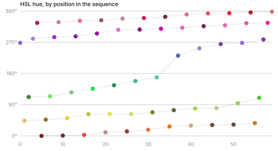
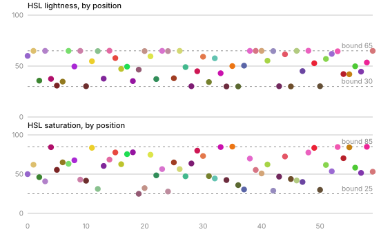

Colour system for the Forse charts library
2025
A chart in Forse Insights can carry a hundred series. Nobody hand-picks a hundred colours. This is the rule I wrote to pick them, rebuilt from the palette it left behind after the company closed and the document describing it went with it.
A hundred series
A Forse terminal answers questions like which of these two hundred wallets received the most, or how a grant programme’s money moved across forty protocols. The handbook StableLab wrote for those programmes asks for cost per retained 90-day user, cost per surviving project, and how concentrated spend is by category, and each of those is a many-series chart by definition. So the terminals carry dozens of series, sometimes a hundred, and every one needs a colour that reads as itself against the others and still looks like it belongs to Forse.
Hand-picking stopped working for me at about twelve. Past that I was choosing between colours that were already too close, and every new terminal restarted the argument. So I turned the job from a palette into a rule: given what is already on the chart, produce the next colour.
A palette is a list. A rule is a list that has not run out yet.
What survived
StableLab ceased operating and the Linear library went with it, including the page where I documented this rule. What survived is the Forse Design System 2.0 file, which holds the rule’s output: my seed colour, sixty pregenerated colours in the order the rule produced them, eighteen per-protocol overrides, and a slide showing the three legacy terminal colours being replaced.
Sixty colours in generation order is a fingerprint. The code is gone, but its habits are all over the sequence, so I reverse-engineered my own work.
The sixty, numbered in generation order. Zero is the seed, #9666CC, used only when the first series has no override of its own. Read down a column and you are reading one hue lane.
What the palette proves

Read the hues in order and they fall into five lanes. My rule visited each lane once per cycle, then came back a little further along, so the sixth colour is a redder red than the first and the eleventh is redder still. By the end each lane has drifted between thirty and seventy degrees from where it started. That is a hue walk with a step that does not divide 360 evenly, so the lanes never land on the same colour twice.

Lightness tells the sharper story. Twenty-five of the sixty sit at exactly 30 or exactly 65 in HSL. Not near, exactly. Values do not pile up on two numbers by chance. They pile up there because I pushed them and a bound stopped them. Saturation shows the same fence at 25 and 85, less crowded. And the bounds are HSL bounds: in CIELAB or OKLab lightness, only four colours touch an extreme. I moved colours in HSL.
I judged them somewhere else. Measured in CIEDE2000, no colour in the first twenty comes within 3.6 of any colour before it, and the median gap is nearly twelve. In the last twenty, seven colours land under 5, one within 1.7 of the seed. A floor that holds early and gives way late is a threshold with a retry limit. The rule kept trying until a candidate cleared the line, and when it had tried enough times it took the best it found.1
One more habit. The distance between each colour and the one immediately before it never drops below 15.7. Whatever else I did, I made sure neighbours in the legend always came out distinct, which is the one place a reader compares two colours directly.
The rule, rebuilt
Put those habits together and the shape of what I built is not in doubt.
Start from the seed, or from an override. #9666CC is the seed. It is used only when the first series has no fixed colour of its own. A Uniswap series takes Uniswap’s pink before the rule runs at all.
Move in HSL. Advance hue by a fixed step. Carry saturation and lightness forward from the last accepted colour.
Measure in a perceptual space. Compute the distance from the candidate to every colour already on the chart, overrides included. HSL is where a colour gets nudged, never where it gets judged, because equal hue steps are not equally visible.
Hold a threshold. If the smallest distance clears it, accept. If not, push lightness by a fixed amount toward the far bound, nudge saturation, advance hue again, measure again.
Clamp. Lightness stays between 30 and 65, saturation between 25 and 85. A push that hits the wall stops there and turns round next time. That is where twenty-five colours ended up sitting on the rails.
Give up gracefully. After a set number of tries, accept the candidate that scored best. The palette keeps growing and the late colours are as distinct as the space allows.
function next(palette, state, opts) {
let best = null;
for (let t = 0; t < opts.tries; t++) {
state.h = (state.h + opts.hueStep) % 360;
if (t > 0) { // a failed try nudges, then clamps
state.l = clamp(state.l + opts.push * state.ldir, 30, 65);
if (state.l === 30 || state.l === 65) state.ldir *= -1;
state.s = clamp(state.s + 5 * state.sdir, 25, 85);
if (state.s === 25 || state.s === 85) state.sdir *= -1;
}
const cand = hsl(state.h, state.s, state.l);
const gap = Math.min(...palette.map(p => distance(cand, p))); // CIEDE2000 or OKLab
if (!best || gap > best.gap) best = { cand, gap };
if (gap >= opts.threshold) break;
}
palette.push(best.cand);
return best.cand;
}Which perceptual space the threshold used is the one thing the sequence does not settle. I tested the floor under CIEDE2000, plain CIELAB distance and OKLab, and the sequence respects all three about equally, which is what you would expect since they agree across most of the gamut. I remember the research comparing exactly those three. The artefact cannot tell me which one won.
Run it
My reconstruction, running on this page. Same seed, same bounds, same shape of loop. I fitted the step and threshold to the original’s statistics rather than recovering them, so this will not reproduce the sixty hexes above. It reproduces their habits.2
Overrides, and the grey
I gave eighteen protocols their own colour, taken from their brand, and made the rule treat those as already on the chart before it generates anything. Sky’s blue and USDC’s blue are close. That is the brands’ problem, and my generated colours route around both.
I gave untagged data #9B9DAC, which is grey2 from the core greys rather than a generated hue, and gave Kamino nothing at all, because its brand is black and white and a generated colour serves it better than either. The grey mattered more than it looks. Untagged series never compete with a real one for a hue, so a chart with a lot of unlabelled noise reads as a few coloured lines over grey rather than a rainbow.
Out of the neon
#B30FFF, #00FFFF and #FFA500 on the left. The first three generated colours on the right.
The terminals before this ran on web primaries at full saturation: an electric violet, pure cyan, pure orange. On the old dark surface they glowed. On the light system they vibrated against white and flattened everything near them. I replaced them one for one with the first three generated colours, and put the mapping into the design system as its own slide so legacy terminals could be migrated without anyone re-deciding.
Certain, inferred, gone
Certain, because it is in the file. The seed. The sixty colours and their order. The eighteen overrides and the untagged grey. The legacy mapping. The HSL bounds of 30 to 65 and 25 to 85.
Inferred, because the sequence behaves that way. Generation in HSL along a hue walk. A perceptual distance threshold around 5 to 8 CIEDE2000. A lightness push of about 15 toward the far bound on failure. A retry cap. A sweep of that rule over a few hundred parameter sets lands closest to the original at a 45 degree hue step.
Gone. The exact step, the exact threshold, which of the three spaces won, and the code. The reconstruction reproduces the sequence’s statistics: the same share of colours on the rails, the same distance floor giving way at the same point. It does not reproduce the sixty hexes, and I would rather say so than pretend.
- Consecutive colours are always far apart and the minimum distance to any earlier colour is what decays, which rules out a rule that only checked the neighbour. It was checking the whole chart.
- Fitted against four statistics of the original: how many colours sit on a lightness rail, the median distance to the nearest earlier colour, how many fall under 5 in each third of the sequence, and the largest gap in hue coverage.